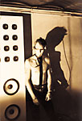
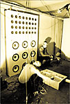
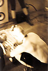
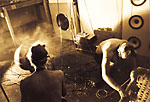
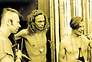

Jari Jula, Kasimir K, Ilpo Väisänen; technology crafted by Jari Lehtinen
ultra 3 has appeared at:
Below some images from ultra 3's performance (and one image right after) in Down By the Laituri in 1992.
    In it's works ultra 3 has been seeking the limit of total randomness.
The first work at Vapauden aukio Gallery 1991 was installation of various objects, some of them producing random output - text and sound.
June 1992 ultra 3 performed in DBTL City Festival. The method to approach randomness was through a closed system, where starting situation is known, as is the duration (10h). As the process was closed, the contact to the audience was limited: visually by wearing steel visors, which allowed only sight down (to operate the devices), not ahead; physically by iron bars splitting the space; audibly by very high sound pressure levels. The sound was produced by operating the devices without any prior plan, choices affected by the prevailing sound scape. Sound was also generated by microphones picking up heart and breath sounds - and bodily functions were affected by the prevailing sound too, especially as infrasounds (down to 12Hz) were used at high levels.
In the following autumn ultra 3 made an installation, where the approach was an open system: the audience walking through the work created the sound via different kinds of sensors.
The 1993 performance was a mixture of open and closed approach. First the eyes of the ultra 3 members were blindfolded, and their arms tied behind their backs. They wore long narrow skirts allowing only limited walking, upper body was bare. The audience was then let in the same room with them. There were sensors detecting body heat and movement of the persons (both ultra 3 and the audience), and this was converted to sound. Further sounds were generated by bio-electric sensors worn by ultra 3: one had the sensors on the forehead, other picking the heart activity, and one in his groins. The audience was provoked to move around in the room (thus changing the sound) by the members of ultra 3, who kept on steadily walking straight ahead whether someone was standing on the way or not.
Jari Jula, Kasimir K, Mika Vainio, Ilpo Väisänen; technology crafted by Jari Lehtinen
sin ø has appeared at: